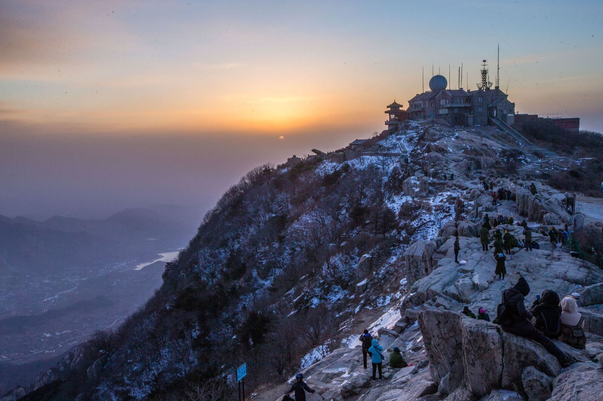
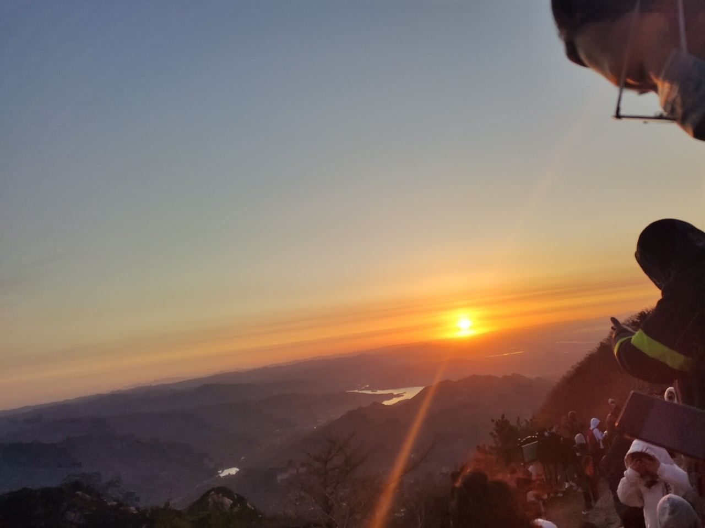
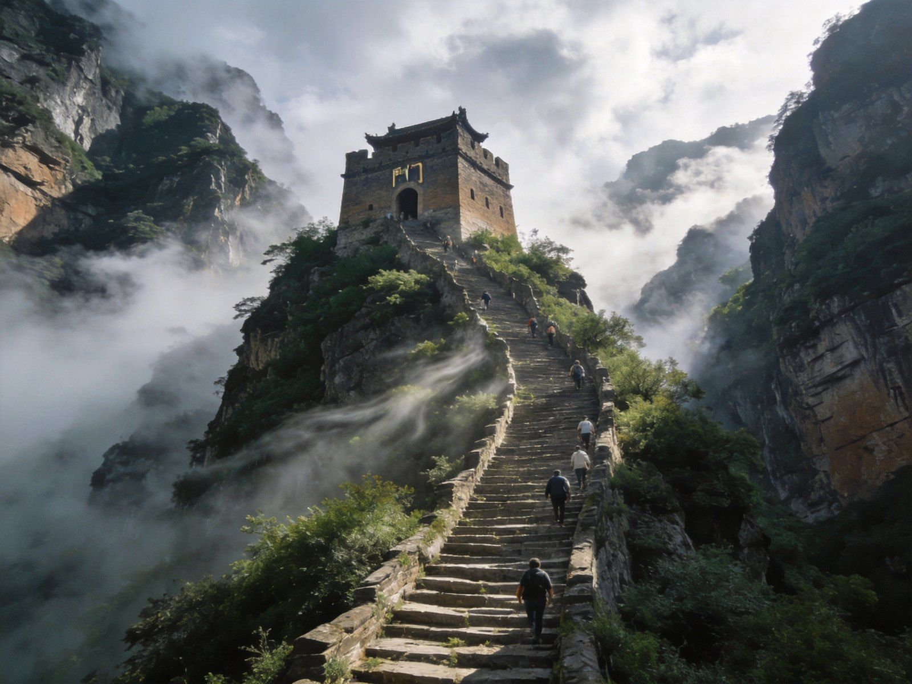
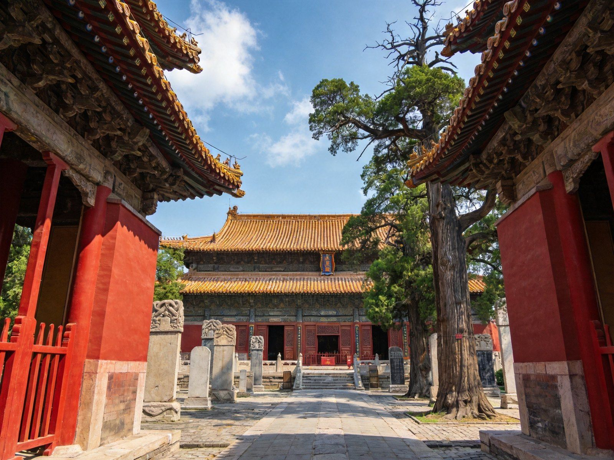
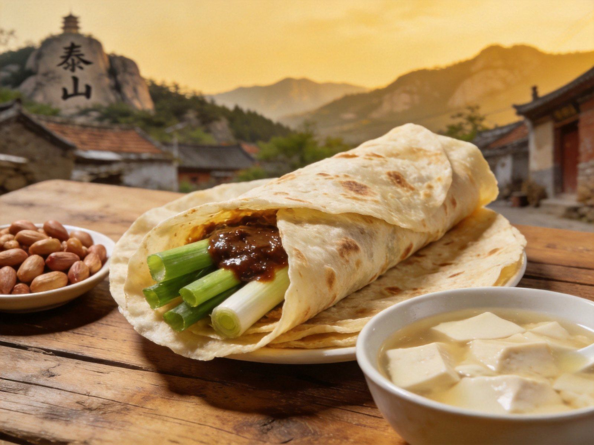

封面
登山总览
行前准备
红门古道
天外村线
岱顶日出
岱庙人文
山味美食
日爬夜爬
安全提示

五岳之首 · 岱宗封禅
泰山
红门 · 岱顶 · 日观峰 · 岱庙
岱顶日出
红门古道
天外村
十八盘
南天门
岱庙
中国 · 山东
A5 口袋手册
· 登山动线
1
/ 10
泰山
登山动线总览
怎么登 · 三条线
Climb Routes
岱顶日出 · 云海翻涌
SUMMIT SUNRISE · 1545M
红门
🥾
徒步经典线
斗母宫→中天门→十八盘，约7-8h全程登顶
天外村
🚌
省力线
坐景交到中天门，可选索道，适合体弱/带娃
夜爬
🌙
夜爬看日出
夜登红门，清晨岱顶迎日出，需备头灯
岱顶
☀️
玉皇顶 · 日观峰
泰山极顶，经典日出机位，封禅台祈福
山麓
🏛
岱庙
帝王封禅前祭拜之所，汉柏唐槐人文浓
TIP
追求仪式感选
红门徒步
，求省力求快选
天外村
；想看日出宿岱顶或夜爬，雨后天晴易现云海。
2
/ 10
泰山
行前准备
海拔 · 季节 · 装备
Prepare
🏔 基本数据
海拔
1545米
，五岳之首、
世界遗产
旺季门票
115元
，红门/天外村两入口
红门线约
7–8小时
登顶
🕐 最佳季节
春秋
登山最宜，气温舒适
冬季
银装素裹，
夏日
避暑清凉
雨后天晴
极易现云海日出
🎒 装备
登山杖、舒适登山鞋、防滑
备足水与能量，山脚有补给点
夜爬备
头灯
、薄外套

南天门 · 登顶的成就之门
3
/ 10
泰山
线路一 · 红门古道
红门
徒步
经典线 · 斗母宫→十八盘
HONGMEN TRAIL
🥾
红门
起点
⛩
斗母宫
古刹
🏛
中天门
半山
🪜
十八盘
千级梯
南天门 · 双腿到顶的成就感

十八盘 · 千余级天梯最陡段
🥾 红门线看点
最经典
徒步线
，8180级台阶
沿途
石刻碑碣
，人文与景并美
十八盘为
最陡段
，南天门即到顶
TIP
红门线约7-8小时登顶，体力一般可改天外村；中途补给点多，备水登山杖。
4
/ 10
泰山
线路二 · 天外村线
天外村
省力
景交＋索道 · 轻松登顶
TIANWAI LINE
十八盘 · 天梯直上
SHIBAPAN · 千级石阶
🚌 天外村线
天外村入口坐
景交车
到中天门
可选
索道
直达南天门附近，省力
适合
老人、小孩、体力较弱
者
⛰ 与红门对比
红门
徒步体验
更足，天外村
省时省力
想登顶快·看日出，天外村+索道更顺
可红门上、索道下，一程双线
TIP
时间紧或体力一般选天外村；想体验徒步+不看全程，可以中天门后再走十八盘精华段。
5
/ 10
泰山
岱顶 · 日出
岱顶
日出
玉皇顶 · 日观峰
SUMMIT & SUNRISE
岱顶日出 · 云海翻涌
SUNRISE · 一生必看
☀️ 岱顶看点
玉皇顶
：泰山极顶 1545米
日观峰
：经典日出机位，看云海翻涌
封禅坛遗址、碧霞祠、清凉山祈福
🌅 看日出
宿岱顶酒店，或前一日上山夜宿
玉皇顶 / 日观峰
是最佳日出点位
看云海需起早，冬春更多云雾
TIP
想看日出务必
宿岱顶
或夜爬；玉皇顶/日观峰位置最优，提前查天气预报与日出时间。
6
/ 10
泰山
山麓 · 岱庙人文
人文
封禅
岱庙 · 祭坛 · 碑碣
DAI TEMPLE

岱庙 · 历代帝王封禅祭天
登山 · 人文与景并美
🏛 岱庙看点
历代帝王
封禅祭天
之所，庄严肃穆
汉柏、唐槐、宋碑
，古木参天
天贶殿为
宋式宏伟宫殿
📜 封禅文化
封禅为古代
最高规格国家祭祀
红门宫、天烛峰等入山口古迹可访
登山前祭拜岱庙，仪式感十足
TIP
岱庙在泰山脚下，自古登山前先祭拜；留半天慢慢逛，碑刻与古木值得细看。
7
/ 10
泰山
山味美食
泰山味道
Local Taste

煎饼卷大葱 · 山乡味
山下夜市 · 烟火气
🥟
煎饼卷大葱
薄脆焦香，配大葱蘸酱 · 5–15元
🥜
水煮花生 / 泰山三美
白菜·豆腐·水，清甜 · 人均30–60
🐟
赤鳞鱼
泰山特产，清蒸最鲜 · 时价
🍢
山下夜市烧烤
山东烧串 · 宵夜 20–50元
TIP
登顶前补充能量，煎饼卷大葱、泰山三美最地道；山下夜市烧烤宵夜火力。
8
/ 10
泰山
日爬 · 夜爬组合
两种玩法参考
Plans
泰山玩法（按登顶方式）：
☀️ 日爬 1 日
红门徒步7-8h登顶 → 索道/步行下山 → 山脚夜市
顺路休闲
🌙 夜爬看日出
夜登红门（约4-5h）→ 清晨岱顶看日出 → 缆车下山vs继续走
仪式感首选
🛏 宿岱顶 2 日
Day1 爬山/索道上山+宿岱顶 → Day2 看日出+岱顶+下山+岱庙
最从容
TIP
泰山适合作为山东旅线的北段或独立登山之旅；日出是可遇不可求的仪式感，随缘而安。
9
/ 10
泰山
安全提示
登山安全，量力而行
Stay Safe
🪜
台阶防滑
十八盘陡峻，扶好栏杆、穿防滑鞋
💧
体能补给
备足水与能量，勿空腹强登
🌙
夜爬照明
夜爬必带头灯、薄外套，结伴而行
💰
旺季排队
缆车/景交旺季排队久，错峰出行
⚠️
防骗
不跟野导、不买高价香烛，紧急拨 110
五岳之首「泰山」祝你登顶圆满 🗻
10
/ 10
WorldStip · 泰山 · 红门 / 岱顶 / 日观峰 / 岱庙 · 数据以景区当日公示为准
Insta360
记录美好
记录美好生活
相机指南 · CAMERA GUIDE